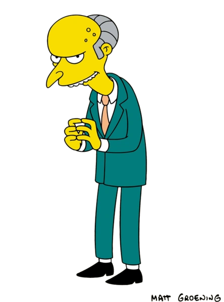
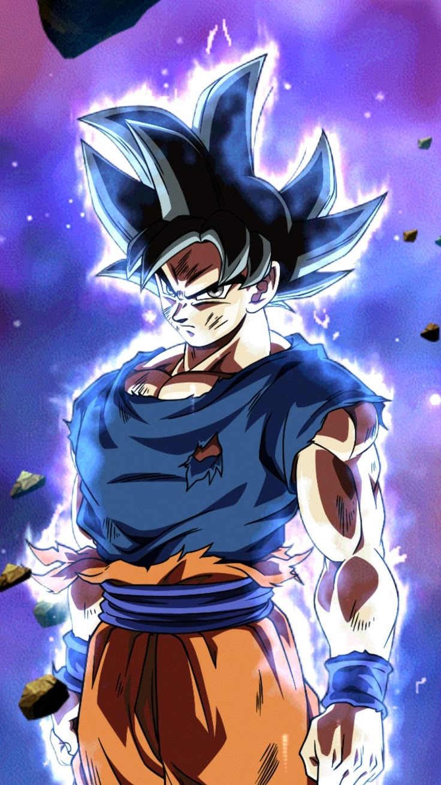
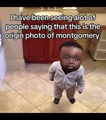

Crear un documento html con 3 imágenes y mediante javascript controlar el evento onmouseover sobre cada imagen para que le ponga los bordes redondeados a la imagen sobre la cual estamos pasando.


